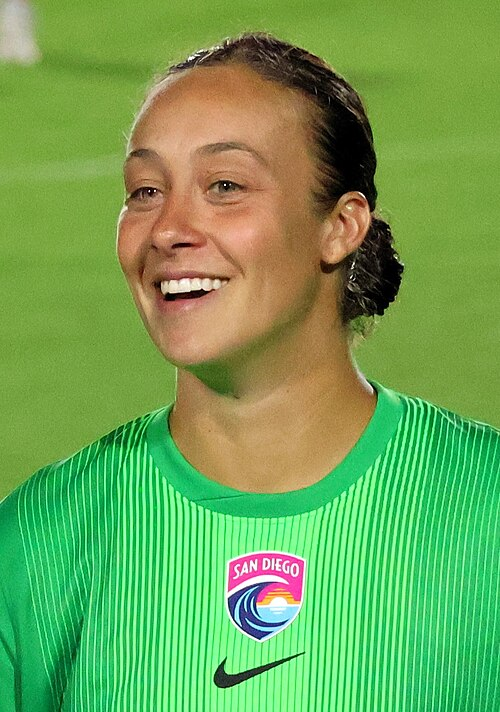

Ezzcoins › Player pages › Kailen Sheridan
82
GK

Sheridan
DIV80
HAN80
KIC79
REF85
SPD80
POS82
Photo (cropped): Hameltion · CC BY-SA 4.0 · Wikimedia Commons
Photo source
https://commons.wikimedia.org/wiki/File:NC_Courage_vs_San_Diego_Wave_(Aug_2025)_70_(Sheridan).jpg
Licence: https://creativecommons.org/licenses/by-sa/4.0
Kailen Sheridan
82 GK · NC Courage · NWSL ·  Canada
Canada
No console price yet. Add this player to your watchlist on Ezzcoins: the most-watched players get a price every hour.
82Meta rating · GK same as overall
DIV80
HAN80
KIC79
REF85
SPD80
POS82
- Position
- GK
- Club
- NC Courage
- League
- NWSL
- Nation
- Canada
- Skill moves
- 1★
- Weak foot
- 2★
- Preferred foot
- Right
- Football
- Women's football
Meta rating: Ezzcoins' own estimate of how well this card plays in game, worked out from its stats for each position it can play, its skill moves, weak foot and PlayStyle+. An average card scores about its overall rating; higher means it plays above its rating.
Watch on Ezzcoins